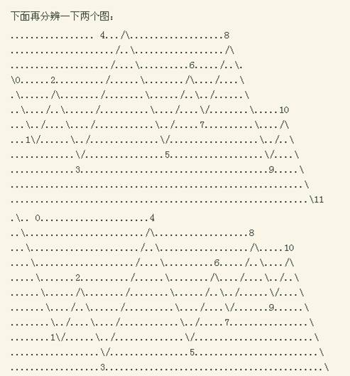
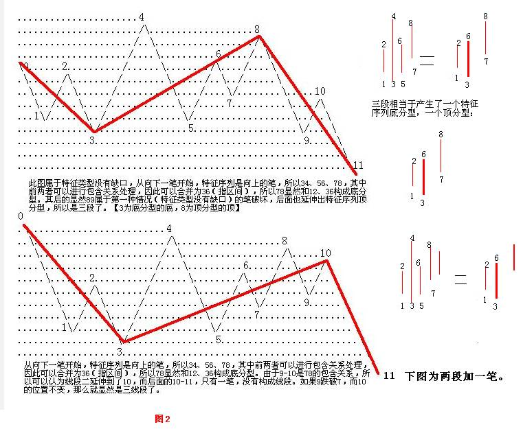
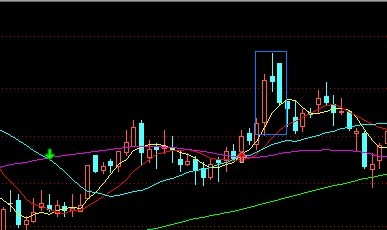
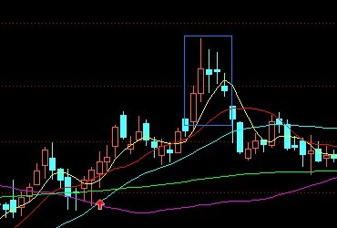
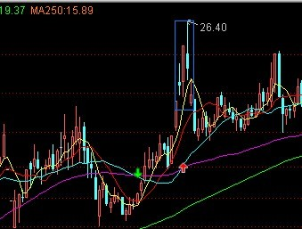
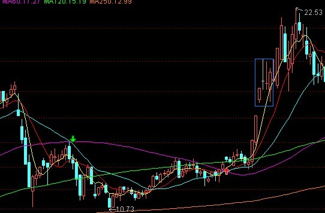
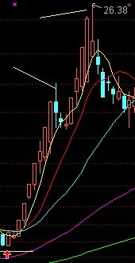
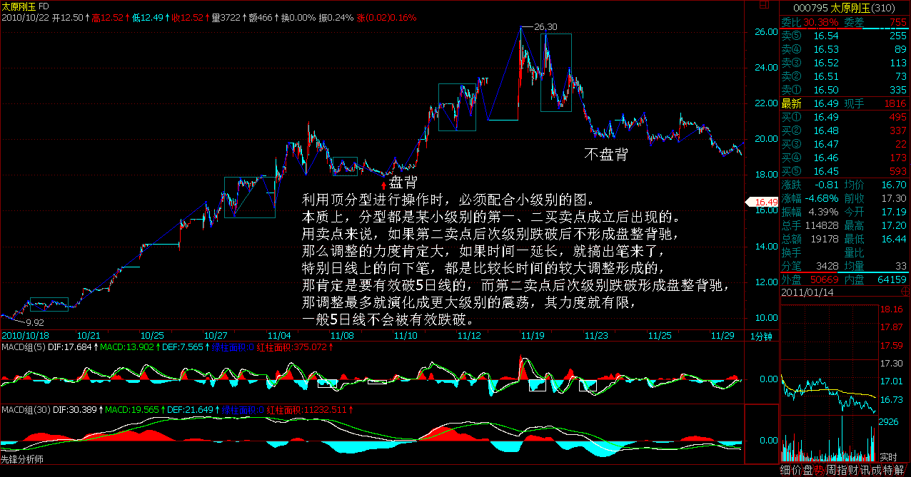
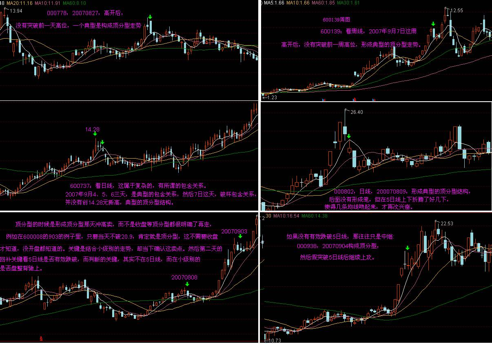

教你炒股票79：分型的辅助操作与一些问题的再解答
(2007-09-10 22:37:13)
首先，发现还有很多人对一些最基本问题犯晕，所以必须在解答一下。然后再说分型的辅助操作。
任何人进入市场，不是要求一个万能的宝贝，然后抱着就想得什么得什么了。本ID的理论，只是其中的因素，利用本ID理论操作的人对理论的把握程度，是一个因素，利用本ID理论操作的人的资金规模以及操作时间，又是一个因素，这些因素加在一起的合力，才是你最终用本ID理论操作的结果。世界上的一切事情，都是各种因素和合而生，没有任何是主宰，是唯一的决定力量，这是必须明确的。
第二个因素，因人而异，无法分析；第三个因素，资金量和操作时间，是可以进行一定的分类分析的。
一、对于很忙，根本没时间操作的人，最好就去买基金。但本ID对基金没有任何信心，而且可以肯定地说，基金肯定会可见的将来内出大事，有些基金要被清盘，最终严重影响市场等，这都是正常的事。美国每年死掉的基金还少吗？中国为什么就不能有基金死掉？证券公司可以死，基金公司凭什么就不能死？
但对基金，是可以对指数基金进行定投，这样等于直接买了中国资本市场这个股票，对该股票，本ID还是有信心的。这样，如果最终牛市上到3、4万点，那么至少你不会丢掉指数的涨幅。
其次，一定要投那些与指数关系不大的成长股。因为如果你投了指数基金，再投和指数关系特别大的基金，就没什么意义了。而成长股，往往在熊市或指数表现不好时有大表现，关键这些成长股有足够的成长性。但唯一不能确定的是，你买的基金的管理者是否有足够的能力去找到有足够成长性的股票组合。
如果很忙，就用这两种方式进行一个基金组合，例如60%买指数基金，40%买高速成长股的基金，这样就别自己搞股票了。采取的方式很简单，就是定投，每个月去投一次。这对于一般的散户投资者，最好了，你至少能买到市场波动的平均。
买基金，等于把自己托付给别人，是生是死，就看你的运气了，不过指数基金稍微好点，毕竟对管理者的要求比较低。
二、对于有充足时间的散户，如果交易通道还行，那就用本ID在前面说过N次的第三买点买卖法，方法再说一次：
1、选定一个足够去反应的级别，例如，30分钟或5分钟的，或者干脆就用日线级别的，这样选择的目标相对少点，不用太乱。
2、只介入在该级别出现第三类买点的股票。
3、买入后，一旦新的次级别向上不能新高或出现盘整背驰，坚决卖掉。这样，只要级别足够，肯定是赚钱的。走了以后，股票可能经过二次回抽会走出新的行情，但即使这样也节省了时间，有时间就等于有了介入新股票的机会。
4、如果股票没出现3的情况，那一定是进入新一轮该级别的中枢上移中，一定要持有到该上移的走势(注:5分3买对应5分趋背）出现背驰后至少卖掉一半，然后一个次级别下来（这里可以回补，但如果有新股票，就没必要了），在一个次级别上去，只要不创新高或盘整背驰，就一定要把所有股票出掉。注意，有一个最狠的作法，就是一旦上移出现背驰就全走，这样的前提是你对背驰判断特别有把握，不是半桶水，这样的好处是时间利用率特别高。
5、尽量只介入第一个中枢的第三类买点。因为第二个中枢以后，形成大级别中枢的概率将急促加大。
6、本方法，一定不能对任何股票有感情，所有股票，只是烂纸，只是用这套有效方法去把纸变黄金。走了以后，股票经过盘整可能还会有继续的新的中枢上移，这是否要介入，关键看高一级别中枢的位置，如果该继续是在高一级别中枢上有可能形成第三买卖点，那这介入就有必要，否则就算了。天涯何处无芳草，把所有的草都搞一遍，你自然就从散户变大散户了。
三、资金量比较大的大散户，这时候，用所有资金去追逐第三类买点已经不切实际了，那么就可以对基本面上有长期价值的股票进行附骨抽髓式的操作，例如各种级别的中枢震荡去减低成本增加筹码。这样，资金效率肯定没有第二种散户的高，但资金量不同，操作方法自然不同。
四、专门的猎手，经过三的训练和操作，资金量变得比较庞大了，就可以对选定目标进行猎杀式的攻击。有些人问，把庄家都杀死了，有什么好处？这不是好不好的问题，资金大了，又不坐庄，又要快点把资金效率提高，唯一的办法就是吃大鱼，吃小鱼还不够塞牙缝，有什么意思？
五、就是组织大规模的战役，这必须要有四的良好基础，否则根本做不了。但这种作法，有时候法律的界限比较模糊，例如，对一个或N个板块进行攻击，这和坐庄是什么关系？当然，如果对原来潜伏在一个或N个板块中的所谓大鳄进行围歼式攻击，那么很多时候，解决问题的，就不光是盘面本身了。
六、全局式的战争，这涉及的方面太多，没有一个全局式的战争是光在市场本身就能解决问题的，而且，资本市场的全局战争，更多时候是更大范围的金融战争的一部分，这是全方位的立体战争，主要考虑的，反而不是市场本身了。
本ID的理论，适用于各种层次的游戏，当然，在越高的层次，技术面的因素就越来越不重要，因为技术面不过是合力的结果，而如果你有高超的调节各种分力的能力，那么一切的技术面都可以制造出来的。但必须注意，任何制造出来的技术面，都无一例外，不能违反本ID技术理论中的最基本结论。有人可能会提这样无聊的问题，在背驰的地方让他不背驰继续上涨难道不可以吗？这是一句废话，没有任何地方是该背驰的，背驰是一个合力的结果，如果合力最终的结果把可能的背驰给破坏了，就证明这地方没出现背驰，这也是合力的结果。
注意，任何力量，即使能调节合力结果本身，但绝对调节不了合力结果的结果，除非这是一个完全没有对手的，一个人的交易。

其实，明白了上几节课，这两个图一定都不难分辨，首先，前提是这两个的前面都没有其他走势了，否则这种分析没意义，前面有其他走势，就有这很多不同的可能变化。
这些图形好象很复杂，其实，只要找到其特征序列就可以。由于34都有第一种类型的笔突破，所以后面的特征序列就很清楚了，34、56、78，其中前两者可以进行包含关系处理，因此可以合并为36，所以78显然和12、36构成底分型，第一种类型笔破坏后延伸出标准的特征序列分型，那显然满足线段破坏的标准。上面的分析，对两个图都是成立的，因此，两者都至少有两个线段。
对于上图，显然89属于第一种情况的笔破坏，后面也延伸出特征序列分型，所以左图的第二线段也被破坏了，所以就是三线段。
下图，由于9-10是78的包含关系，所以可以认为线段二延伸到了10，而后面的10-11，只有一笔，因此必须再看两笔才知道是否满足第一种类型后继续延伸出特征序列分型的基本线段破坏要求，所以该图属于未完成的图。如果9跌破7，而10的位置不变，那么就显然是三线段了。
线段的划分其实一点不难，关键从概念出发就可以。

最后说说如何利用分型进行一些辅助判断的问题。一般，都至少用日线以上K线图上的分型，当然，如果你不觉得麻烦，30分钟也是可以的。但那些变动太快的，准确率就要大大有问题了。
本ID也不避嫌疑，都用本ID持有的股票为例子：
000778，20070827，高开后，没有突破前一天高位，一个典型是构成顶分型走势；

600139：看周线，
9月7日
这周高开后，没有突破前一周高位，形成典型的顶分型走势。

600737：看日线，这属于复杂的，有所谓的包含关系。2007年9月4、5、6三天，是典型的包含关系，然后7日这天，破坏包含关系，并没有创14.28元新高，典型的顶分型结构。

注意，顶分型结构后不一定有底分型结构与顶分型结构有一个非共用的K线，也就是不一定构成笔，但一般来说，如果顶分型后有效跌破5日线，那就没什么大戏了，就算不用搞个笔出来，也会用时间换空间，折腾好一阵子。
000802，日线，200070809，形成典型的顶分型结构，后面没有形成笔，但在5日线上下折腾了好几下，使得几条均线吻起来，才再次兴奋。

但如果没有有效跌破5日线，那往往只是中继：
000938，20070904构成顶分型，然后假突破5日线后继续上攻。

注意，利用顶分型进行操作时，必须配合小级别的图。本质上，分型都是某小级别的第一、二买卖点成立后出现的。用卖点来说，如果第二卖点后次级别跌破后不形成盘整背驰，那么调整的力度肯定大，如果时间一延长，就搞出笔来了，特别日线上的向下笔，都是比较长时间的较大调整形成的，那肯定是要有效破5日线的，而第二卖点后次级别跌破形成盘整背驰，那调整最多就演化成更大级别的震荡，其力度就有限，一般5日线不会被有效跌破。


以上六个例子图形汇总

利用上面的性质，实质上并不需要在顶分型全部形成后再操作，例如000938，0904那天，不需要等到收盘，而在在其冲高时，一看在前一天高位下形成小级别卖点，就可以坚决出掉，然后下来形成顶分型，等跌破5日线后，看是否出现小级别的盘整背驰，一旦出现，就回补，所以就有了9月5日的走势，这样，等于打了一个10%多的短差。
注意，操作的难点在于：
一、 必须与小级别的第二买卖点配合看，如果小级别看不明白，只看今天冲起来没破前一天高位或没跌破前一天低位，这样操作的效果不会太好。
二、 要利用好盘整背驰，这样就不会漏掉回补，或者是非盘整背驰而回补早了，一般来说，非盘整背驰的，一定要等待背驰出现才可以回补。买点(娇：底分后买入点的处理）的情况反过来就是了(娇注：底分买入的情况看分型后出现盘整背驰不突破5日线卖出。非盘整背驰的，等出现背驰后再作是否卖出判断）。
注意，大级别的分型和某小级别的第一、二买卖点并不是绝对的对应关系，有前者一定有后者，但有后者并不一定有前者，所以前者只是一个辅助。
最后可以看一个综合的例子，600008：
808日，顶分型后跌破5日线，然后调整到均线吻起来再启动。903日，顶分型后没有有效跌破5日线，然后继续上涨，第二天有一个盘整背驰的回补点。

注意，顶分型的时候是形成顶分型那天冲高卖，而不是收盘等顶分型都很明确了再走，例如在600008的903的例子里，只要当天不破20.9，肯定就是顶分型，这不需要收盘才知道，没开盘都知道的。关键是结合小级别的走势，去当下确认这卖点。然后第二天的回补关键看5日线是否有效跌破，而判断的关键，其实不在5日线，而在小级别的是否盘整背驰上。
这些细微的技术问题，都需要不断磨练才能操作自如，现在，最好多找些图来看，先感受一下，否则一点概念都没有，操作什么？
娇注：日线高级别顶分型后成为中继，在小级别里发生的情况是，2卖后次级别跌破呈盘整背驰或者出现第三卖点后无中枢移动呈扩展中枢，起码向上的3段确认小级别扩展。
要来的总要来---为下跌热烈鼓掌(2007-09-11 15:59:25)
最近反复强调，企图和政策对着干的人，最终的结局就是消失，这已被中国资本市场18年的历史所反复证明。不管任何理由，今天的下跌值得热烈鼓掌。
技术上，本ID已经很明确地说过，本周将有绝大可能构成周K线上的顶分型，这是3600点以来的第一次，而在小级别上，目前依然可以归为5分钟的中枢震荡，操作上先卖后买的原则，足以让你避开今天的下跌。
好了，下跌已经是事实，就不用多说了，问题是后面如何去操作。昨天图上的79在5265点(5分中枢ZD)，只要后面的1分钟走势反抽走势不能重新站上该位置，则第三类卖点成立，后面至少要扩张成30分钟的中枢，最恶劣的就是5分钟的中枢下移。

短线上，日线的9月7日，顶分型形成，显然，现在一定要形成至少笔的调整，因此，在形成有效的日线底分型之前，大盘的调整不会有效结束。但短线的震荡反弹机会还是很多的，有没有必要参与，就要根据各人的情况了。
目前5周线在5074点，一般来说，第一次触及和跌破5周线后，都有一次强烈的反抽，因此配合上面的分析，该反抽是否够成5分钟中枢的第三类卖点，将决定整个调整的力度。
另外，由于周线的顶分型除非有特别的意外，已经成立，所以关键要看这顶分型后的调整是两种类型中的哪种，也就是是否有效跌破5周线，一旦有效跌破，那调整就级别大了，至少要形成一个周的底分型才能结束；如果不有效跌破5周线，那么调整的幅度就有限。
本ID在八月下旬就明确说过，任何与2/3线相关的活动，本ID都是支持的，现在又见2/3线，调整将以该线为基准，上下震荡构成，只要最终能站住该线，大盘依然会再次展开中长线的行情。而在站稳该线之前，反复难免，看看3000点下的1/4线、4300点下的1/2线当时是怎么走的就明白了。
市场操作中，最多见、最无聊的，就是上涨的时候就忘了还有调整的事情，一调整就认为世界要末日，这种心态，还是回家买豆腐吧。
所有下跌后就怨这怨那的，都请离开市场。政策面的变化难道是今天的？昨天还不是很牛说要顶着政策上？现在怎么蔫了？这市场的操作，都是自己的，要怨的只有自己的贪婪与恐惧。
万古长空，一朝风月，没有任何走势值得叨唠的，过去的就过去了，关键是后面的操作。无论前面的操作是成功还是失败，只要市场在，人在，股票在，资金在，这游戏就继续运转，没有必然的胜利者和失败者，关键是从此刻起，与自己的贪婪与恐惧说再见，深刻了解自己的能力与可能性，形成一套适合自己的操作原则，这样，失败的可以胜利，胜利的继续胜利，对过去说三道四没什么意义。
今天有事，不能回答问题了，先下，再见。
|